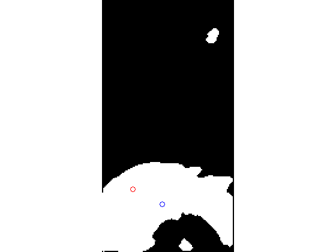
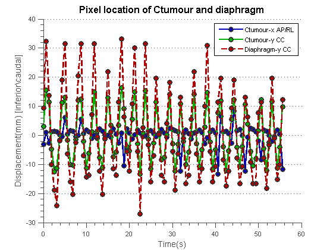
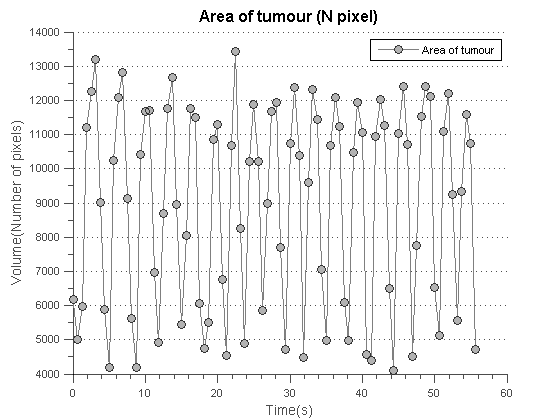
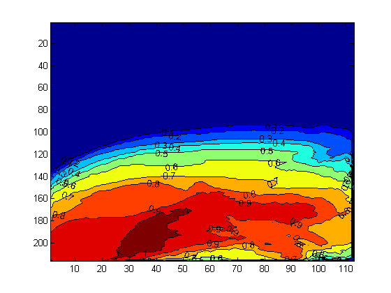
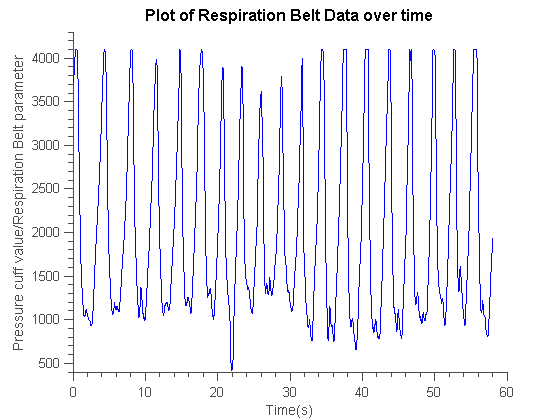
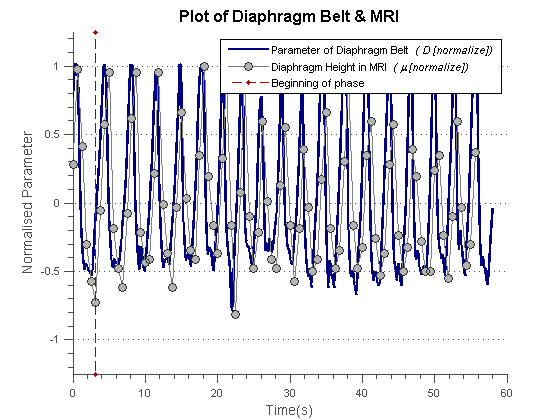
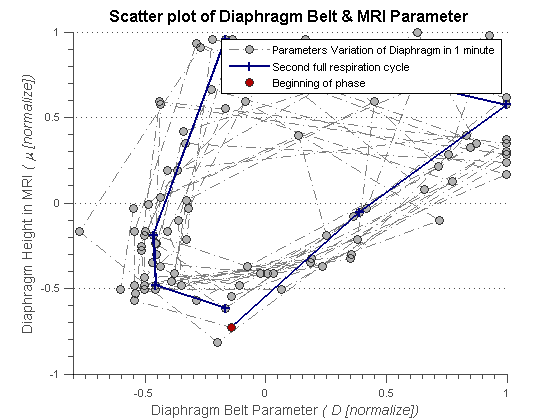
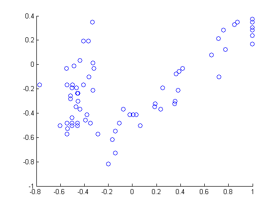
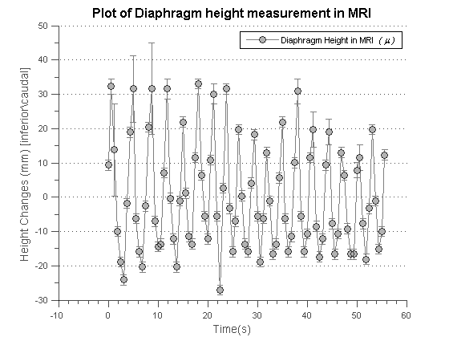

Contents
- Documents
- Reading the Data
- Searching for the initial crop coordinates and FeatureExtraction Coordinates
- For Original Image
- Gaussian filter
- Test of multiple frame
- Segmentation of Tumour
- Segmentation method 2: Local Otsu method
- Segmentation of Diaphragm
- Features Extraction
- Verification Section
- Plots
- Density Plot
- Importing and interpretating the RESP data
- Plotting the data together nicely
- Changing the Data for Diaphragm belt into identical dimension with MRI measurement
- Scatter plot of diaphragm parameter
- Fitting for confidence
- Examing the accuracy of diaphragm segentation
Documents
%Test case for programs in GUI: loading all files as usual, but stop % before segmenting, would be changes to test all different segmentation % methods % %% Clearing and some default settings clear all close all % docked figures are easier to manage % set(0,'DefaultFigureWindowStyle','docked') set(0,'DefaultFigureWindowStyle','normal') % Matlab complains a lot in dock format iptsetpref('ImshowInitialMagnification', 'fit') warning('off','Images:imshow:magnificationMustBeFitForDockedFigure'); %Suppress Docked Fit Warning % set(0,'DefaultFigureWindowStyle','normal') %Load All functions addpath('C:\Users\Minghao\Desktop\research project\GUI\functions') % % supress all figure!!! for publishing for now % set(0,'DefaultFigureVisible','off') handles.cropcor1 = [51.51,94.51,75.98,51.98]; handles.cropcor2 = [23.51,201.51,84.98,52.98];
Reading the Data
Using matlab UI to navigate into the responding folder
[fName,pName] = uigetfile('*', 'Load data'); handles.pName = pName; % to pass this directory for other function if pName == 0, return; end % dicomlist = dir(fullfile(pName,'Images','*.dcm')); handles.dicomlist = dir(fullfile(pName, '*')); %Generating a list of filename for reading in that directory, based on the 1st letter on the name handles.dicomlist(~strncmp({handles.dicomlist.name}, fName(1), 1)) = []; % this yank out those files that isn't start with the same 1st letter as selected file % handles.dicominfo = dicominfo(fullfile(pName,handles.dicomlist(1).name)); %reading dicominfo from the very 1st file % Sorting the image, so that the order of time/frame are consistent % chronologically [handles.fname inx]= sort_nat({handles.dicomlist.name}); handles.dicomlist = handles.dicomlist(inx); for cnt = 1 : numel(handles.dicomlist) handles.data{cnt} = im2double(dicomread(fullfile(pName,handles.dicomlist(cnt).name))); % directory reading of dicom files handles.info{cnt} = dicominfo(fullfile(pName,handles.dicomlist(cnt).name)) ; end %Setting up ImgFolder for items handles.ImageFolder = pName; %passing the directory path to textbox/display
Searching for the initial crop coordinates and FeatureExtraction Coordinates
Read for crop coordinate data and This search the Image folder for predata.txt, that is supposed to recorded the relevent cropping detaisl
handles.predataName = 'predata.txt'; if exist(fullfile(pName, handles.predataName), 'file') % File exists. Do stuff.... % % Display that notice the user there is pre-existing crop region % txtInfo = sprintf('There is pre-existing crop region \n cropping and thresholding will generate new predata.txt'); % set(handles.txtbox, 'string', txtInfo); % Read the File, and output it into matrix M = dlmread(fullfile(pName, handles.predataName)); % Updating crop coordinates and method's option handles.cropcor1 = M(1,:); handles.cropcor2 = M(2,:); % handles.MethodV = M(3,1); try handles.ExtractionCor = M(3,:); % catch exception % figure, imshow(handles.I1{cnt}) % [impixel end else % File does not exist. % Display that notice the user there is not pre-existing crop region txtInfo = sprintf('There is no pre-existing crop region \n will generate predata.txt after cropping and thresholding \n handles.cropcor1'); set(handles.txtbox, 'string', txtInfo); end % hence after crop and imagesegmentation, write it to the file, though this would % require sharing of pName, fullFileName as handles dlmwrite(fullfile(handles.pName, handles.predataName), ... [handles.cropcor1; handles.cropcor2])
For Original Image
%This section would crop the relevent section, while aso preserving the I1 %and I2 original cropping for comparison later on. %Cropping and Saving as two cells for cnt = 1 : numel(handles.dicomlist) handles.I1{cnt} = imcrop(handles.data{cnt},handles.cropcor1); handles.I2{cnt} = imcrop(handles.data{cnt},handles.cropcor2); % times 2 because of the orignal half int end % %Depiciting the Image % figure, imhist(handles.I1{1}), title('Original Image Histogram') % figure, imshow( handles.I1{1},[])
Gaussian filter
applying gaussian filter to OriginalLocal histogram and CLAHE processed frame just to check the influence
for cnt = 1 : numel(handles.dicomlist) handles.Gdata{cnt} = Gaussian_fn(handles.data{cnt}, 3,2) ; handles.GI1{cnt} = Gaussian_fn(handles.I1{cnt}, 3,2) ; handles.GI2{cnt} = Gaussian_fn(handles.I2{cnt}, 3,2) ; end
Test of multiple frame
test = [1 5 13 20 30];
Segmentation of Tumour
Segmentation method 2: Local Otsu method
I would expect the same result, but doing local should have the benifit it doing without the OtsuBinV control, at least, for most cases. In the 1st frame, it is observed that LO has better result, though whether that is conslusive remain to be seen
% In both case, the Gaussian filtered image is the best, Histogram % Localisation and CLAHE doesn't seems to aid in segmentation much, though, % perhaps looking at more frame, more data sets is require for any % conclusion handles.OtsuBinV = 2; for cnt = 1 : numel(handles.dicomlist) % handles.I1{cnt} = imcrop(handles.dataT{cnt},handles.cropcor1)*2; % handles.I2{cnt} = imcrop(handles.dataT{cnt},handles.cropcor2)*2; % times 2 because of the orignal half int % Acting on Original data handles.LOI1{cnt} = otsu(handles.I1{cnt},handles.OtsuBinV)*handles.OtsuBinV; % Acting on Gaussian filtered data handles.LOGI1{cnt} = otsu(handles.GI1{cnt},handles.OtsuBinV)*handles.OtsuBinV; % Acting on LH data % handles.LOLHI1{cnt} = otsu(handles.LHI1{cnt},handles.OtsuBinV)*handles.OtsuBinV; % Acting on LHG data % handles.LOGLHI1{cnt} = otsu(handles.GLHI1{cnt},handles.OtsuBinV)*handles.OtsuBinV; % handles.I2{cnt} = otsu(handles.I2{cnt},handles.OtsuBinV)*handles.OtsuBinV; end % going through to depict imshow on test frames, % for i = 1 : 3 % figure('Name',' Original'),... % imshow(handles.I1{test(i)},[],'InitialMagnification',100), title({' Original'}) % figure('Name','Local Otsu method on Original'),... % imshow(handles.LOI1{test(i)},[],'InitialMagnification',100), title({'Local Otsu method on Original'}), % figure('Name','Local Otsu method on Gaussian data'),... % imshow(handles.LOGI1{test(i)},[],'InitialMagnification',100), title({'Local Otsu method on Gaussian data'}) % end
Segmentation of Diaphragm
for cnt = 1 : numel(handles.dicomlist) % handles.GI2{cnt} = histeq(handles.GI2{cnt}); handles.LOGI2{cnt} = otsu(handles.GI2{cnt},handles.OtsuBinV)*handles.OtsuBinV; end
Features Extraction
Planning to make a function for features extraction, verifying, plotting
% Some parameters that enable GUI control, enable all here handles.Erode_DilateV = 1; handles.Bwareaopen = 1; handles.Erode_DilateV = 1; handles.Imfill = 1; handles.DynamicUpV = 1; [ handles ] = FeatureExtract( handles.LOGI1,handles.LOGI2, handles ); % hence after crop and imagesegmentation, write it to the file, though this would % require sharing of pName, fullFileName as handles dlmwrite(fullfile(handles.pName, handles.predataName), ... [handles.cropcor1; handles.cropcor2; handles.ExtractionCor])
Verification Section
Tumourpixelmargin = 25; Diahphragmpixelmargin = 20;
[ handles ] = VerifyExpectation(handles, Tumourpixelmargin, Diahphragmpixelmargin );
Plots
Since currently plotting by acquisition time and content time on the siemens MRI makes little sense, the time plot is just, far from resonable
handles.SensibleTime = false; % The number of frames starting from the first that which makes sense in % its temporal time. handles.TimeSensibleRange = 2; [ handles ] =PlotsCV( handles );
Warning: Unable to interpret TeX string "Displacement(mm) [inferior\caudal]" 
Density Plot
ProbabilityMap = 0;
for cnt = 1: numel(handles.dicomlist)
ProbabilityMap = ProbabilityMap + handles.dataMap{cnt};
end
% Normalising
ProbabilityMap = ProbabilityMap/numel(handles.dicomlist);
figure, contourf(ProbabilityMap,'ShowText','on');
axis ij
 Importing and interpretating the RESP data
run('C:\Users\Minghao\Desktop\research project\GUI\RESP\ImportDataManual') run('C:\Users\Minghao\Desktop\research project\GUI\RESP\InterpretingData') %Due to the Data of DIaphragm belt being recorded in uint16, to ease the %path of comparison, it would be chaged into single here Data=single(Data); % plot(time,(Data-mean(Data))*2/max(Data), handles.time_axis, ... % (handles.DiaphragmYbound)/max(handles.DiaphragmYbound))
Plotting the data together nicely
Create basic plot for plotting both diaphragm belt and height with respect to time
figure; hold on; DBelt = line(time, (Data-mean(Data))*2/max(Data)); DMRI = line(handles.time_axis, handles.DiaphragmYbound/max(handles.DiaphragmYbound)); StartPhase = line([handles.time_axis(6), handles.time_axis(6)], [-1.25, 1.25]); % Adjust line properties (functional) set(DBelt , ... 'Color' , [0 0 .5] ); set(DMRI , ... 'Marker' , '.' , ... 'Color' , [.5 .5 .5] ); set(StartPhase , ... 'LineStyle' , '--' , ... 'Marker' , '.' , ... 'Color' , [.7 0 0] ); % Adjust line properties (aesthetics) set(DBelt , ... 'LineWidth' , 2 ); set(DMRI , ... 'LineWidth' , 1 , ... 'Marker' , 'o' , ... 'MarkerSize' , 6 , ... 'MarkerEdgeColor' , [.2 .2 .2] , ... 'MarkerFaceColor' , [.7 .7 .7] ); set(StartPhase , ... 'LineWidth' , 1 ); % Set the axis limits axis([0 60 -1.25 1.25]); % Add labels hTitle = title ('Plot of Diaphragm Belt & MRI'); hXLabel = xlabel('Time(s)' ); hYLabel = ylabel('Normalised Parameter' ); % % Add text % hText = text(10, 800, ... % sprintf('{\\itC = %0.1g \\pm %0.1g (CI)}'); % Add legend hLegend = legend([DBelt, DMRI StartPhase], ... 'Parameter of Diaphragm Belt \it ( D [normalize]) \it' , ... 'Diaphragm Height in MRI \it ( \mu [normalize]) \it', ... 'Beginning of phase'); % Adjust font set( gca , 'FontName' , 'Helvetica' ); set([hTitle, hXLabel, hYLabel] , 'FontName' , 'AvantGarde'); set([hLegend, gca] , 'FontSize' , 8 ); set([hXLabel, hYLabel] , 'FontSize' , 10 ); set( hTitle , 'FontSize' , 12 , ... 'FontWeight' , 'bold' ); % Adjust axes properties set(gca, ... 'Box' , 'off' , ... 'TickDir' , 'out' , ... 'TickLength' , [.02 .02] , ... 'XMinorTick' , 'on' , ... 'YMinorTick' , 'on' , ... 'YGrid' , 'on' , ... 'XColor' , [.3 .3 .3], ... 'YColor' , [.3 .3 .3], ... 'YTick' , -1:0.5:1, ... 'LineWidth' , 1 ); hold off
Changing the Data for Diaphragm belt into identical dimension with MRI measurement
% Examine the correlation % 0.5/TemporalResolution % 0.625/0.0025 = 250 for cnt = 1:numel(handles.DiaphragmYbound) DBelt(cnt) = Data(1+(cnt-1)*250); Dtime(cnt) = time(1+(cnt-1)*250); end % figure; % plot(Dtime, (DBelt-mean(DBelt))*2/max(DBelt), handles.time_axis, ... % (handles.DiaphragmYbound)/max(handles.DiaphragmYbound));
Scatter plot of diaphragm parameter
scatter((DBelt-mean(DBelt))*2/max(DBelt),(handles.DiaphragmYbound)/max(handles.DiaphragmYbound));
figure; hold on; BeltVMRI = line((DBelt-mean(DBelt))*2/max(DBelt),(handles.DiaphragmYbound)/max(handles.DiaphragmYbound)); BeltVMRI_period = line((DBelt(6:12)-mean(DBelt))*2/max(DBelt),(handles.DiaphragmYbound(6:12))/max(handles.DiaphragmYbound)); BeltVMRI_6 = line((DBelt(6)-mean(DBelt))*2/max(DBelt),(handles.DiaphragmYbound(6))/max(handles.DiaphragmYbound)); % Adjust line properties (functional) set(BeltVMRI , ... 'LineStyle' , '-.' , ... 'Marker' , '.' , ... 'Color' , [.5 .5 .5] ); set(BeltVMRI_period , ... 'Marker' , '+' , ... 'Color' , [0 0 .5] ); set(BeltVMRI_6 , ... 'LineStyle' , 'none' , ... 'Marker' , '*' , ... 'Color' , [.0 .5 .0] ); % Adjust line properties (aesthetics) set(BeltVMRI , ... 'LineWidth' , 1 , ... 'Marker' , 'o' , ... 'MarkerSize' , 6 , ... 'MarkerEdgeColor' , [.2 .2 .2] , ... 'MarkerFaceColor' , [.7 .7 .7] ); set(BeltVMRI_period , ... 'LineWidth' , 2 ); set(BeltVMRI_6 , ... 'Marker' , 'o' , ... 'MarkerEdgeColor' , [.2 .2 .2] , ... 'MarkerFaceColor' , [.7 0 0] ); % Add labels hTitle = title ('Scatter plot of Diaphragm Belt & MRI Parameter'); hXLabel = xlabel('Diaphragm Belt Parameter\it ( D [normalize]) \it ' ); hYLabel = ylabel('Diaphragm Height in MRI \it ( \mu [normalize])\it' ); % Add legend hLegend = legend([BeltVMRI, BeltVMRI_period, BeltVMRI_6], ... 'Parameters Variation of Diaphragm in 1 minute' , ... 'Second full respiration cycle' , ... 'Beginning of phase' ); % Adjust font set( gca , 'FontName' , 'Helvetica' ); set([hTitle, hXLabel, hYLabel] , 'FontName' , 'AvantGarde'); set([hLegend, gca] , 'FontSize' , 8 ); set([hXLabel, hYLabel] , 'FontSize' , 10 ); set( hTitle , 'FontSize' , 12 , ... 'FontWeight' , 'bold' ); % Adjust axes properties set(gca, ... 'Box' , 'off' , ... 'TickDir' , 'out' , ... 'TickLength' , [.02 .02] , ... 'XMinorTick' , 'on' , ... 'YMinorTick' , 'on' , ... 'YGrid' , 'on' , ... 'XColor' , [.3 .3 .3], ... 'YColor' , [.3 .3 .3], ... 'XTick' , -1:0.5:1.25, ... 'YTick' , -1:0.5:1.25, ... 'LineWidth' , 1 ); hold off % % Because to compore the coefficient between the time, the parameter would be reuired to have the same dimension. % numel(Data) % handles.DiaphragmYbound % % % 0.5/TemporalResolution % for cnt = 1:numel(handles.DiaphragmYbound) % DBelt(cnt) = Data(1+(cnt)*200) % end % plot(handles.time_axis, DBelt/max(DBelt), handles.time_axis, ... % (handles.DiaphragmYbound)/max(handles.DiaphragmYbound))
Fitting for confidence
%Seeing that there appears to be a tread for data at certain peroid, it %would perhaps be possible to isolate selected data points and plot them %out. DParameter = ((DBelt-mean(DBelt))*2/max(DBelt)); muParameter = (handles.DiaphragmYbound)/max(handles.DiaphragmYbound); %Seeing that the data below \mu < 0.38 have more significant trends thresh = 0.38; %Utilizing arrayfun/cellfun to check for indices of arrays that is below %threshold. vidx = arrayfun(@(x) x < thresh, muParameter); %Preserving only those values smaller than threshold level DParameter_refined = DParameter(vidx); muParameter_refined = muParameter(vidx); %Initial Plot figure,scatter(DParameter_refined,muParameter_refined); % Still no easy fit for the plot, would have to split it into two... DParameter_refined = DParameter_refined([ [DParameter_refined(1:end)]>-0.2]); muParameter_refined = muParameter_refined([ [DParameter_refined(1:end)]>-0.2]); %Second Plot figure,scatter(DParameter_refined,muParameter_refined);

Examing the accuracy of diaphragm segentation
%Using the Import Data function to extract the error for individual %diaphragm % Import the data [~, ~, raw] = xlsread('C:\Users\Minghao\Desktop\research project\Thesis\Diaphragm Accuracy\Estimating Error.xlsx','Sheet1','A1:A90'); % Create output variable EstimatingError = reshape([raw{:}],size(raw)); % Clear temporary variables clearvars raw; %To select those who is greater than certain value % EstimatingError_refined = EstimatingError([ [EstimatingError(1:end)]>3]); figure; hold on; DMRI = errorbar(handles.time_axis, handles.DiaphragmYbound, ... EstimatingError*handles.info{1}.PixelSpacing(1)); % Normalised version % DMRI = errorbar(handles.time_axis, handles.DiaphragmYbound/max(handles.DiaphragmYbound), ... % EstimatingError*handles.info{1}.PixelSpacing(1)/max(handles.DiaphragmYbound)); % Adjust line properties (functional) set(DMRI , ... 'Marker' , '.' , ... 'Color' , [.5 .5 .5] ); % Adjust line properties (aesthetics) set(DMRI , ... 'LineWidth' , 1 , ... 'Marker' , 'o' , ... 'MarkerSize' , 6 , ... 'MarkerEdgeColor' , [.2 .2 .2] , ... 'MarkerFaceColor' , [.7 .7 .7] ); % % Set the axis limits % axis([0 60 -1.25 1.25]); % Add labels hTitle = title ('Plot of Diaphragm height measurement in MRI'); hXLabel = xlabel('Time(s)' ); hYLabel = ylabel('Height Changes (mm) [inferior\caudal] ' ); % Add legend hLegend = legend([ DMRI ], ... 'Diaphragm Height in MRI \it ( \mu ) \it'); % Adjust font set( gca , 'FontName' , 'Helvetica' ); set([hTitle, hXLabel, hYLabel] , 'FontName' , 'AvantGarde'); set([hLegend, gca] , 'FontSize' , 8 ); set([hXLabel, hYLabel] , 'FontSize' , 10 ); set( hTitle , 'FontSize' , 12 , ... 'FontWeight' , 'bold' ); % Adjust axes properties set(gca, ... 'Box' , 'off' , ... 'TickDir' , 'out' , ... 'TickLength' , [.02 .02] , ... 'XMinorTick' , 'on' , ... 'YMinorTick' , 'on' , ... 'YGrid' , 'on' , ... 'XColor' , [.3 .3 .3], ... 'YColor' , [.3 .3 .3], ... 'LineWidth' , 1 ); hold off
Warning: Unable to interpret TeX string "Height Changes (mm) [inferior\caudal] "